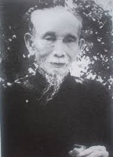

Nền trời thi ca của miền Trung và của riêng đất Thần Kinh thơ mộng vừa khuất bóng một văn tình quen thuộc: Cụ Thúc Giạ Ưng Bình, nhà thơ lão thành chủ súy Hương Bình Thi xã, một trong những đại biểu cuối cùng của làng thơ “phong lưu tài tử”, người đã từ hơn nửa thế kỷ nay, với phong độ ung dung thích thảng của một “tao nhân mặc khách” thời xưa, từng giữ bền cái văn phong cổ điển thuần nhã của những con người “cốt nhạc nòi tình”.
Chúng tôi không có dụng ý - và sự thực cũng chưa dám vội vàng xác định địa vị văn học của một người thơ “lớp trước” như Thúc Giạ tiên sinh, chúng tôi chỉ nhận thấy Ưng Bình Thúc Giạ lão tiên sinh là một trường hợp đáng kể, vì ít nhiều, nếp sống tài tử của tiên sinh cũng biểu hiện cái phong thái của một lớp người nào, trong một bối cảnh lịch sử nào, ở một vị trí xã hội nào đặc biệt

Dưới ánh mặt trời hôm nay, cuộc sống hình như chuyển biến quá mau chóng. Thế kỷ 20 của chúng ta mới trải qua 60 năm lịch sử, mà đã bao nhiêu vật đối sao dời: bao nhiêu lớp tuồng thế sự thăng trầm; bao nhiêu lớp sóng phế hưng dồn dập; bao nhiêu lớp người đã tiếp nhau cất bước không ngừng! Mỗi năm, mỗi tháng, mỗi ngày, lại có thêm những người mới tới, tạo nên một nhịp sống xô bồ, cuồng nhiệt, từng giờ, từng phút, từng giây…
Bên cạnh những lớp người mới hoặc còn đang chập chững dò đường hoặc vừa bước chân vào ngưỡng cửa cuộc sống, có những lớp người đang chính thức góp phần tạo nên lịch sử, lại có cả những lớp người đã hoàn toàn chấm dứt nhiệm vụ lịch sử của mình, để có thể an nhiên sống ngoài vòng cương tỏa, hoặc bình thản cất bước tiêu dao trên con đường dẫn tới Im Lặng ngàn đời.
Đáng kể hơn nữa. Thúc Giạ tiên sinh là người đã trải qua cả hai thể kỳ, đã trải qua sóng gió cả hai thời đại, đã chứng kiến cả nhưng biến cố lịch sử bất ngờ nhất của mấy chế độ giao thời. Trước mắt tiên sinh, bao nhiêu lớp tuồng nhân sự bi hoan đã diễn qua, đủ lớp. Vậy mà tiên sinh vẫn giữ thái độ của một kẻ mặc khách, đến với cuộc đời từ cuối thế kỷ trước, giao động giữa bao nhiêu chiều hướng tư tưởng, tâm hồn phong nhã của tiên sinh vẫn giữ nguyên cốt cách thuần lương và tiên sinh ở lại cuộc đời đến tận quá nửa phần thế kỷ hiện kim, bản ngã hào hoa vẫn ung dung, không hề thay đổi, mặc cho nhịp sống mỗi ngày mỗi thêm dồn dập, quay cuồng.
Nếp sống phóng dật của tiên sinh, bên ngoài, phảng phất nhiễm cái phong khí thần tiên xuất thế của Lão Trang. Nhưng trong chiều sâu của ý thức, trong phần mật ẩn bao la của tâm linh, phải nhận rằng: sỡ dĩ tiên sinh giữ bền thái độ an nhiên tự tại như vậy cũng vì tiên sinh đã nhìn thấy cái chân tướng của sự vật hiện ra dưới chiều ánh sáng huyền diệu của triết lý sắc không. Cuộc đời có, không, không, có, đối với với tiên sinh, dù sống qua hơn nửa thế kỷ, cũng chỉ là một khoảnh khắc phù du. Ý niệm đó, tiên sinh đã từng phô diễn trong lời thơ “Khuyên Học Phật”, văn khí tự nhiên mà thành tín như một bài Kệ, gói ghém cả cái duyên nghiệp phù trầm của một kiếp nhân sinh đã sống qua năm mươi tám năm trời (bài thơ làm năm tiên sinh 58 tuổi):
Đường danh nẻo lợi ngó đông đông,
Chen chúc nhau chi đám bụi hồng!
Kìa bóng bạch, câu qua chẳng lại.
Nọ tranh thương cẩu có rồi không.
Dở cười, dở khóc trên sân khấu,
Khi nở, khi tàn mấy cụm bông.
Sao kiếp phù sinh cho khỏi lụy,
Quyển kinh, câu kệ chớ nài công.
Với phong độ tài tử kia, với tâm hồn trầm mặc ấy, lại sẵn theo nền nếp nho phong cố hữu, tiên sinh quả là một “kẻ sĩ cốt tiên, tâm Phật”, phối hợp nhịp nhàng tinh hoa của cả ba nền học thuật Nho, Thích, Lão, chứng tỏ rằng tinh thần “Tam Giáo đồng nguyên” chung đúc trong một con người, nhiều khi đã tạo nên những bản ngã nghệ sĩ đặc biệt. Thúc Giạ Ưng Bình lão tiên sinh chính là một nghệ sĩ điển hình theo chiều hướng ấy.
Thử đọc những vần thơ sau đây, bên cạnh bài thơ “Khuyên Học Phật”, chúng ta sẽ thấy bên cạnh con người mộ đạo bằng “quyển kinh, câu kệ” học lối giải thoát của thiền gia, còn có thêm cả một đệ tử trung thành của Lý, Đỗ, mượn cầm, kỳ, thi, tửu làm thú xuất trần, tạo riêng cho mình một lối “tu” phóng túng, lâng lâng phong vận tiểu thần tiên.
Đây là bài “Phủ Doãn về hưu”, tác giả làm năm 57 tuổi:
Mừng đến bến ba mươi năm bể hoạn,
Lái còn nguyên, lèo lạt vẫn còn nguyên.
Ngoắt ông câu, cậy gởi con thuyền,
Ôm sách cũ lại theo miền núi cũ.
Biết đủ, dầu không chi cũng đủ,
Nên lui, đã có dịp thời lui.
Sẵn có đây phong nguyệt kho trời,
Câu hành lạc cập thời, ta chớ trễ.
Có lầu Ngạc liên huy, có đình Lai vũ thể.
Hội Kỳ anh thêm lắm vẻ phong tao.
Thỏa lòng rày ước mai ao.
Và đây là bài “Gởi ông Phan Kính Chỉ”, Thúc Giạ tiên sinh làm năm 57 tuổi:
Cẩm tú hồ sơn vi địa chủ,
Hỏi còn ai hơn chú Phan Lang?
Có ca cơ, có thi hữu, có ngọc dịch, quỳnh tương.
Sông Hãn có, sông Hương mình chẳng có.
Chắp cánh những mong ra đến đó,
Dừng chèo xin hãy đợi chờ đây.
Khúc Tỳ Bá hãy cứ lên giây.
Câu bạch tuyết thêm gây mùi xướng họa.
Ngã tối liên khanh, khanh ái ngã,
Dệt tờ mây nong nả đứng ngồi trông,
Thấu tình Thúc Giạ hay không?
Có ai chăng, thấu tình Thúc Giạ? Và có ai biết chăng Thúc Giạ là một nghệ sĩ rất mực đa tình, cuộc sống không phải chỉ thu hẹp trong bầu trăng gió cầm ca của chốn đình viên, thi xã, mà còn tỏa rộng trên khắp cả đất nước, non sông, sẵn sàng hòa đồng cùng nhịp sống của những tâm hồn đồng điệu bốn phương. Thế nên Thúc Giạ tiên sinh rất hiếu khách.
Ai là khách văn mặc đặt chân tới kinh thành Huế mà không từng nghe tiếng thi ông Ưng Bình Thúc Giạ, người mặc khách của thôn Vỹ Dạ, chủ súy Thi xã Hương bình, người đã khoác một tấm áo phong nhã hào hoa cho Hồn Thơ sương kính của đất Thần Kinh, gây cho phong trào hội ngâm ở Huế cả một cái nếp diễm lệ từ mấy chục năm nay vẫn giữ nguyên tư thế.
Nếu người du khách lại có cái duyên tri ngộ với chủ súy Hương Bình Thi Xã mà tất cả các khách văn nhân tài tử gần xa, nếu có lòng tìm đến, đều dễ dàng thắt chặt mối duyên - khách sẽ càng có dịp nhìn gần thêm nếp sống phong lưu của người nghệ sĩ tài hoa, và cũng nhìn gần, hiểu rõ, khách sẽ càng thêm cảm mến, không vì cái văn vẻ đài các của cuộc thù ứng mà giảm bớt chân tình. Bởi vì cái đài các văn vẻ của Thúc Giạ tiên sinh rất tự nhiên, phong điệu hào hoa của tiên sinh rất sảng khoái, cốt cách phong lưu của tiên sinh rất thuần nhị, và thứ nhất, tấm lòng hiếu khách của tiên sinh rất đầm thấm, chân thành.
Khách sẽ nhớ mãi những kỷ niệm êm đẹp, và nhớ mãi tâm hồn thuần nhã mà cởi mở của chủ nhân, người nghệ sĩ tài tử hun đúc trong Hồn Thơ Sông Hương Núi Ngự; và cũng xứng đáng “đại điện” cho Núi Ngự Sông Hương.
Gần kinh thành Huế, bên con đường rộng qua thôn Vỹ Dạ, trước một khu vườn xanh rờn cây là thuộc phủ Tuy Lý, khách sẽ nhớ mãi chiếc cổng xây trên đề ba chữ “Chu Hưng Viên”, và chắc hẳn khách cũng không quên đôi câu đôi chữ kèm hai bên:
Khoái mã trường chu, đông tây đắc lộ.
Hầu môn cự thất, tả hữu vi lân…
Quên làm sao cả đôi câu đối nôm:
Ưng đọc thi tiên, thẳng đó một đường lên Vỹ Dạ,
Muốn nghe kinh Phật, cách đây vài cửa đến Ba La
Từ cổng vào vài chục bước, giữa đám cây um tùm, khách còn nhớ chăng “tòa nhà ngói cổ kinh”, với sân lát, bể xây, tường hoa, non bộ? Bên trong thi viện sách, hiên đàn, lầu thơ, đài Phật, hoành phi, câu đối, sập gụ, ghế bành…”. (1). Đó chỗ ở của Thúc Giạ Ưng Bình tiên sinh; khung cảnh ấy cùng với người ấy đã hòa hợp khăng khít, tưởng chừng cảnh không thể vắng người, mà người cũng không thể thiếu cảnh.
Theo dõi tiểu sử của tiên sinh, chúng ta phải nhận rằng: thực hiếm có một thi gia sống tới gần một thế kỷ (84 năm), mà cuộc sống lúc nào cũng giữ được tiết điệu thăng bằng, đều đặn, một cuộc sống thoải mái trôi xuôi, với đầy đủ phong vận của một con người “cực nhân gian chi phẩm giá, phong nguyệt tình hoài, tối thế thượng chi phong lưu giang hồ khí cốt”…
Sinh trưởng trong một gia đình trâm anh thế phiệt (tiên sinh là con cụ Hiệp Tá Tiểu Thảo Hồng Thiết, cháu nội Đức Ông Tuy Lý Vương), ra đời năm Đinh Sửu 1877, cậu công tử Ưng Bình đã sớm tốt nghiệp trường Quốc Học Huế, đỗ đầu kỳ thì Ký lục năm 27 tuổi, đổ Cử nhân Hán học năm 33 tuổi.
Từ tuổi thiếu niên, bước đường công danh của tiên sinh cứ tuần tự mà tiến bắt đầu làm Ký lục năm 1904, sau bổ Tri huyện, lần lượt thăng Tri phủ, Viên ngoại, Thị lang, Bố chánh, Tuần vũ, Phủ doãn Thừa Thiên, rồi về hưu và thăng Thượng thư trị sự năm 1933; sau đó, tiên sinh từng làm Viện trưởng Viện Dân biểu Trung Kỳ năm 1940-1945, thăng Hiệp tá Đại học sĩ năm 1943.
Đường hoạn lộ như vậy cũng có thể coi là hiển đạt. Nhưng đối với tiên sinh, sự hiển đạt ấy chỉ có ý nghĩa khi mà tiên sinh có đủ hoàn cảnh để thực hiện giấc mộng thơ hào phóng của mình. Bởi vậy những lúc công việc nhàn rỗi, tiên sinh vẫn thường ngao du sơn thủy, uống rượu ngâm thơ, cầm ca xướng họa. Vốn sành âm nhạc, tiên sinh thường soạn lấy khúc hát tự cầm roi chầu, thả hồn trong cung bậc tiêu tao cũng sành điệu như truyền cảm hứng vào thi tứ. Tiên sinh ưa thích nhất là các điệu tuồng cổ, ca Huế, hò mái nhì, cả đến ca trù, chèo cổ. Một câu hò mái nhì của tiên sinh đã trở nên quen thuộc và phổ biến nơi cửa miệng người dân miền Trung, đến nỗi nhiều khi người ta thường quên cả tác giả để yên chí rằng đây là một khúc dân ca:
Chiều chiều trước bên Vân Lâu, ai ngồi, ai câu, ai sầu, ai thảm?
Ai thương, ai cảm, ai nhớ, ai trông?
Thuyền ai thấp thoáng bên sông,
Đưa câu mái đẩy, chạnh lòng nước non.
Một vũng nước trong, mười dòng nước đục,
Một trăm người tục, một chục người thinh.
Biết ai gan ruột gởi mình,
Mua tơ thêu lấy tượng Bình Nguyên Quân.
Từ khi tiên sinh về hưu, thì căn nhà ngói thanh nhã giữa vườn cây u tĩnh nơi thôn Vỹ Dạ lại càng thêm dặt dìu cung đàn, tiếng hát, câu thơ. “Chốn hưu đinh của tiên sinh đã nghiễm nhiên thành nơi hội ngâm của Thi xã Hương Bình”. Các thi hữu xa gần tới lui xướng họa, cuộc đời của Thúc Giạ lão tiên sinh từ đây quả thực chỉ là một bài thơ dài góp bằng vần điệu của bao nhiêu mặc khách tao nhân, chen lẫn cùng tiếng hát, cung đàn trầm bổng.
Có người sẽ nghĩ rằng nếp sống tài tử đó chỉ là một hình thái tiêu khiển thù tạc với cuộc đời, một lối “chơi thơ” kiểu cách của lớp nhà nho nhàn dật. Và nhiều người trẻ tuổi ngày nay chắc sẽ cho rằng cái văn phong đài các của các Tao Đàn, Thi xã như Thi xã Hương Bình giờ đây không khỏi lỗi thời trước bước tiến không ngừng của trào lưu thi ca hiện đại.
Kẻ viết bài này không nghĩ thế.
Thi ca hiện đại cứ việc tiến đến phương trời mới. Nhưng quá khứ là của lớp người đi trước như Ưng Bình lão tiên sinh. Chúng ta là kẻ hậu sinh, chúng ta không thể lượng biết được tấm lòng quan hoài Dĩ Vãng của tiên sinh mênh mang như thế nào. Những con người đã sống qua cả mấy thế hệ hẳn tâm hồn phải ràng buộc với ngày xưa đậm tình hơn chúng ta.
Còn như phong độ “chơi thơ” tài tử kia, cũng như cái thú chơi cây cảnh, bể xây, non bộ, của cổ nhân cũng như cái hứng “làm thơ”, “sinh điếu” người sống xét ra đã biểu thị một thái độ triết nhân cao viễn du hý với vần điệu, chính vì cổ nhân có quan niệm cuộc đời chỉ là một cuộc thù ứng tiêu dao, không hơn không kém. Đem câu thơ, tiếng hát, cung đàn tô điểm cho cuộc giao tế, phải chăng chính là hòa mình uyển chuyển vào cuộc sống, tạo cho cuộc sống một cái nhịp tương sinh thuần hậu? Cũng như chơi giả sơn, cây cảnh, chính là thu hẹp vũ trụ bao la trước tầm mắt, để thưởng thức được tinh tế hơn những hình thái hòa điệu, và cũng để dễ dàng thông cảm với cái vô cùng của vũ trụ. Và làm thơ viếng trước người sống, cũng như bầy sẵn một cỗ hậu sự trong nhà, phải chăng để mà tự nhủ mình thản nhiên nhìn vào cái chết, để xác nhận rằng kiếp sống quả là phù du, và cuộc đời một con người thực cũng không dài hơn một cuộc thù tạc du hý.
Tất cả những việc làm đó đều thoát thai từ nếp sống nhàn du của cổ nhân, đều biểu lộ một triết lý nhân sinh sâu sắc.
Triết lý thâm thúy đó, cùng văn phong sương kính kia, chúng ta đều có thể tìm thấy trong hồn thơ của Thúc Giạ Ưng Bình lão tiên sinh.
Theo tài liệu của giáo sư Phan Thế Roanh, chúng ta có thể nhận định về sự nghiệp văn chương của Thúc Giạ tiên sinh như sau:
Từ trước đến nay, những thơ xướng họa của tiên sinh, vừa nôm vừa chữ, kể có trên nghìn bài. Thơ nôm trước thời đại chiến, có tập Tình Thúc Giạ, đã trích in năm 1942; sau hồi đại chiến có tập Đời Thúc Giạ, sắp xuất bản. Thơ chữ đã góp thành Lộc Minh Thi tập, cũng chưa in.
Những khúc hát góp, đã trích in năm 1954 thành tập Bán buôn mua vui và được truyền tụng rất nhiều: những câu tình tứ lâm ly, văn chương chải chuốt, ta thường được vẳng nghe nơi núi Ngự sông Hương, trong ấy có rất nhiều câu của tiên sinh, đã biến thành ca dao từ lâu và rất được phổ thông trong quần chúng. Hài kịch thì có tập Tào Lao viết phỏng theo truyện cổ. Còn quyển Tuồng Lộ Địch, tiên sinh đã phỏng theo sự tích quyển tuồng Le Cid của nhà văn Pháp Corneille, mà đặt thành vở tuồng cổ Việt Nam ngày trước đã có đăng ở các báo Đông Phong, Thần Kinh, tạp chí… v.v và đã được rất nhiều thi ca đề tặng của các thi hữu xa gần; đã được diễn nhiều lần trên sân khấu ở các tỉnh Thanh Hóa, Bình Định, Quảng Nam, v.v… và nhiều nhất là ở Huế. Buổi diễn đầu tiên tại rạp Xuân Kinh Đài ở Kinh đô năm 1937, tiên sinh có làm một bài thơ kỷ niệm nhan đề “Khai diễn tuồng Lộ Địch” như sau:
Rạp hát Vương tôn đã khoác màn
Đã ra sân khấu giữa Trường An
Hiếu tình ngắm rõ gương bi kịch
Thanh sắc mừng thêm vẻ lạc quan
Giá ngọc treo cho đào Hữu Hạnh
Nhà vàng dựng để kép Phương Lan.
Ham vui điệu cũ câu tuồng mới,
Tri kỷ xin chào bạn khán quan.
Tuồng này đã xuất bản năm 1936 và mới tái bản năm 1959.
Ngoài Bắc trong Nam, tao nhân mặc khách mà biết tiếng tiên sinh cũng là nhờ có những tác phẩm nói trên. Cụ Phú Khê Đoàn Tá, chủ suý Liên thành Thi xã ở Phan Thiết đã có bài sau này:
Thơ “Tình Thúc Giạ” nhớ từng câu
Lộ Địch tuồng xem cùng thuộc làu.
Đạo lý cương thường gương vạn thuở,
Văn chương đức hạnh tiếng ngàn thu;
Nguồn Tiên lá ngọc là thân trước
Cõi Phật mình vàng hẹn kiếp sau.
Cầu chúc hữu ông thêm thọ mãi
Giữ nền quốc túy đặng dài lâu.
Thúc Giạ tiên sinh vừa tạ thế tại Vỹ Dạ thôn, sau 84 năm sống với thi ca, đàn hát. Tiên sinh lìa trần hồi 2 giờ sáng ngày 4- 4-1961 tức là ngày 19 tháng Hai năm Tâu Sửu, nhằm đúng ngày via Đức Phật Quan Thế Âm.
Thúc Giạ Hương Bình lão tiên sinh đã khuất bóng. Tiên sinh đã lên đường đi về thiên cổ, có lẽ để nhập “Hội Kỳ Anh” với những thi hữu đồng niên tuế. Tiên sinh không còn ở lại với chúng ta! Lại thêm một trong những đại biểu cuối cùng của Hồn thơ cổ kính ngày xưa vừa rũ vạt áo hào hoa đi mất. Chúng ta cảm thấy mất theo cả một dĩ vãng dịu hiền và thanh nhã, cả “văn phong ỷ mỹ” dặt dìu “tuyết hoa giăng gió” của các thi gia lớp trước, cái văn phong trang trọng tuy không còn phù hợp với khí hậu thao thức của thời đại chúng ta, nhưng chính vì thế mà chúng ta vẫn coi như hương thơm thuần hậu của một loài hoa quý - không những chỉ quý vì hiếm, mà còn quý, vì đó là biểu thị trung thực nhất, thuần khiết nhất của cái Hồn Sống đã một thời từng xoa dịu nỗi lòng của những người đi trước chúng ta, và ấp ủ cả những giấc mộng của chính chúng ta từ hồi thơ ấu.
Dĩ vãng kia không bao giờ còn trở lại. Và bông hoa phảng phất hương thơm thanh lịch kia cũng chìm dần theo dĩ vãng để rồi vĩnh viễn đi mất.
Còn Thúc Giạ lão tiên sinh, dĩ vãng kia cùng chúng ta vẫn còn gần gũi. Mất Thúc Giạ lão tiên sinh, dĩ vãng kia cùng chúng ta trở nên xa xôi quá.
Giờ đây chúng ta nhắc tới tiên sinh, chính là hoài niệm lại bao nhiêu vang bóng xa xưa, mà dù muốn, dù không, bản chất chúng ta, từ trong cùng thâm tâm linh, đã từng thấm nhập.
Để kết thúc, bài này, và cũng là để kính viếng hương hồn Thúc Giạ Ưng Bình lão tiên sinh, chỉ xin mượn lại bài thơ sau đây của giáo sư Phan Thế Roanh, thay thế một lời ai điếu:
Mây phủ sông Hương, núi Ngự Bình,
Thôi đà che khuất bóng văn tinh.
Câu thơ điệu cổ càng thêm hiểm,
Khúc hát thời xưa khó lựa thành.
Giở mấy phong thư mà gạt lệ,
Ngắm vài bức ảnh đến tàn canh.
Sao cho khuây khỏa niềm thương nhớ?
Thúc Giạ thi ông có thấu tình?
Chú thích:
(1) Theo tài liệu của giáo sư Phan thế Roanh (đăng trong Luận Đàm số 5, tháng 4 1961).